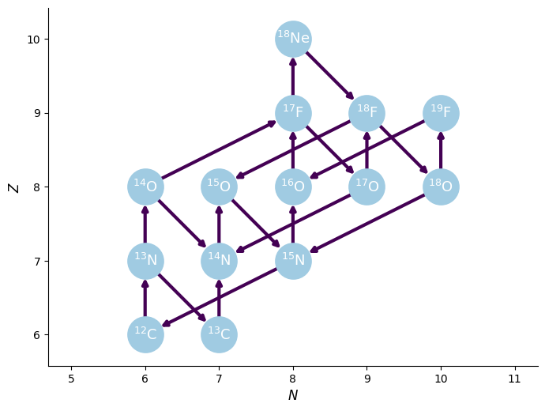
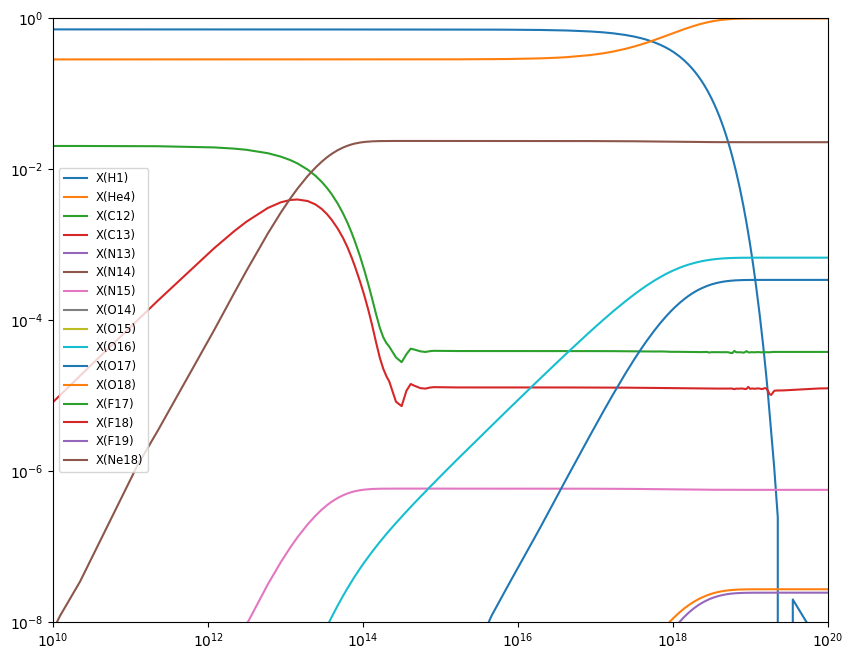

import numpy as np
import matplotlib.pyplot as plt
import pynucastro as pyrl
Integration Example¶
We can use pynucastro to generate the righthand side function for an astrophysical reaction network.
We’ll create a CNO network that has the rates for all 4 CNO cycles + hot-CNO, as listed here: https://reaclib.jinaweb.org/popularRates.php
files = ["c12-pg-n13-ls09",
"c13-pg-n14-nacr",
"n13--c13-wc12",
"n13-pg-o14-lg06",
"n14-pg-o15-im05",
"n15-pa-c12-nacr",
"o14--n14-wc12",
"o15--n15-wc12",
"n15-pg-o16-li10",
"o16-pg-f17-ia08",
"f17--o17-wc12",
"o17-pa-n14-il10",
"o17-pg-f18-il10",
"f18--o18-wc12",
"o18-pa-n15-il10",
"o18-pg-f19-il10",
"f19-pa-o16-nacr",
"o14-ap-f17-Ha96c",
"f17-pg-ne18-cb09",
"ne18--f18-wc12",
"f18-pa-o15-il10"]
rc = pyrl.RateCollection(files)
We can visualize the network and rates linking the nuclei
rc.plot()

pynucastro can write out the python code needed to evaluate the reaction rates
pynet = pyrl.PythonNetwork(files)
pynet.write_network("cno_integration_example.py")
%cat cno_integration_example.py
import numpy as np
from pynucastro.rates import Tfactors
import numba
ip = 0
ihe4 = 1
ic12 = 2
ic13 = 3
in13 = 4
in14 = 5
in15 = 6
io14 = 7
io15 = 8
io16 = 9
io17 = 10
io18 = 11
if17 = 12
if18 = 13
if19 = 14
ine18 = 15
nnuc = 16
A = np.zeros((nnuc), dtype=np.int32)
A[ip] = 1
A[ihe4] = 4
A[ic12] = 12
A[ic13] = 13
A[in13] = 13
A[in14] = 14
A[in15] = 15
A[io14] = 14
A[io15] = 15
A[io16] = 16
A[io17] = 17
A[io18] = 18
A[if17] = 17
A[if18] = 18
A[if19] = 19
A[ine18] = 18
Z = np.zeros((nnuc), dtype=np.int32)
Z[ip] = 1
Z[ihe4] = 2
Z[ic12] = 6
Z[ic13] = 6
Z[in13] = 7
Z[in14] = 7
Z[in15] = 7
Z[io14] = 8
Z[io15] = 8
Z[io16] = 8
Z[io17] = 8
Z[io18] = 8
Z[if17] = 9
Z[if18] = 9
Z[if19] = 9
Z[ine18] = 10
names = []
names.append("h1")
names.append("he4")
names.append("c12")
names.append("c13")
names.append("n13")
names.append("n14")
names.append("n15")
names.append("o14")
names.append("o15")
names.append("o16")
names.append("o17")
names.append("o18")
names.append("f17")
names.append("f18")
names.append("f19")
names.append("ne18")
@numba.njit()
def ye(Y):
return np.sum(Z * Y)/np.sum(A * Y)
@numba.njit()
def p_c12__n13(tf):
# c12 + p --> n13
rate = 0.0
# ls09n
rate += np.exp( 17.1482 + -13.692*tf.T913i + -0.230881*tf.T913
+ 4.44362*tf.T9 + -3.15898*tf.T953 + -0.666667*tf.lnT9)
# ls09r
rate += np.exp( 17.5428 + -3.77849*tf.T9i + -5.10735*tf.T913i + -2.24111*tf.T913
+ 0.148883*tf.T9 + -1.5*tf.lnT9)
return rate
@numba.njit()
def p_c13__n14(tf):
# c13 + p --> n14
rate = 0.0
# nacrn
rate += np.exp( 18.5155 + -13.72*tf.T913i + -0.450018*tf.T913
+ 3.70823*tf.T9 + -1.70545*tf.T953 + -0.666667*tf.lnT9)
# nacrr
rate += np.exp( 13.9637 + -5.78147*tf.T9i + -0.196703*tf.T913
+ 0.142126*tf.T9 + -0.0238912*tf.T953 + -1.5*tf.lnT9)
# nacrr
rate += np.exp( 15.1825 + -13.5543*tf.T9i
+ -1.5*tf.lnT9)
return rate
@numba.njit()
def n13__c13__weak__wc12(tf):
# n13 --> c13
rate = 0.0
# wc12w
rate += np.exp( -6.7601)
return rate
@numba.njit()
def p_n13__o14(tf):
# n13 + p --> o14
rate = 0.0
# lg06n
rate += np.exp( 18.1356 + -15.1676*tf.T913i + 0.0955166*tf.T913
+ 3.0659*tf.T9 + -0.507339*tf.T953 + -0.666667*tf.lnT9)
# lg06r
rate += np.exp( 10.9971 + -6.12602*tf.T9i + 1.57122*tf.T913i
+ -1.5*tf.lnT9)
return rate
@numba.njit()
def p_n14__o15(tf):
# n14 + p --> o15
rate = 0.0
# im05n
rate += np.exp( 17.01 + -15.193*tf.T913i + -0.161954*tf.T913
+ -7.52123*tf.T9 + -0.987565*tf.T953 + -0.666667*tf.lnT9)
# im05r
rate += np.exp( 6.73578 + -4.891*tf.T9i
+ 0.0682*tf.lnT9)
# im05r
rate += np.exp( 7.65444 + -2.998*tf.T9i
+ -1.5*tf.lnT9)
# im05n
rate += np.exp( 20.1169 + -15.193*tf.T913i + -4.63975*tf.T913
+ 9.73458*tf.T9 + -9.55051*tf.T953 + 0.333333*tf.lnT9)
return rate
@numba.njit()
def p_n15__he4_c12(tf):
# n15 + p --> he4 + c12
rate = 0.0
# nacrn
rate += np.exp( 27.4764 + -15.253*tf.T913i + 1.59318*tf.T913
+ 2.4479*tf.T9 + -2.19708*tf.T953 + -0.666667*tf.lnT9)
# nacrr
rate += np.exp( -6.57522 + -1.1638*tf.T9i + 22.7105*tf.T913
+ -2.90707*tf.T9 + 0.205754*tf.T953 + -1.5*tf.lnT9)
# nacrr
rate += np.exp( 20.8972 + -7.406*tf.T9i
+ -1.5*tf.lnT9)
# nacrr
rate += np.exp( -4.87347 + -2.02117*tf.T9i + 30.8497*tf.T913
+ -8.50433*tf.T9 + -1.54426*tf.T953 + -1.5*tf.lnT9)
return rate
@numba.njit()
def o14__n14__weak__wc12(tf):
# o14 --> n14
rate = 0.0
# wc12w
rate += np.exp( -4.62354)
return rate
@numba.njit()
def o15__n15__weak__wc12(tf):
# o15 --> n15
rate = 0.0
# wc12w
rate += np.exp( -5.17053)
return rate
@numba.njit()
def p_n15__o16(tf):
# n15 + p --> o16
rate = 0.0
# li10r
rate += np.exp( 14.5444 + -10.2295*tf.T9i
+ 0.0459037*tf.T9 + -1.5*tf.lnT9)
# li10r
rate += np.exp( 6.59056 + -2.92315*tf.T9i
+ -1.5*tf.lnT9)
# li10n
rate += np.exp( 20.0176 + -15.24*tf.T913i + 0.334926*tf.T913
+ 4.59088*tf.T9 + -4.78468*tf.T953 + -0.666667*tf.lnT9)
return rate
@numba.njit()
def p_o16__f17(tf):
# o16 + p --> f17
rate = 0.0
# ia08n
rate += np.exp( 19.0904 + -16.696*tf.T913i + -1.16252*tf.T913
+ 0.267703*tf.T9 + -0.0338411*tf.T953 + -0.666667*tf.lnT9)
return rate
@numba.njit()
def f17__o17__weak__wc12(tf):
# f17 --> o17
rate = 0.0
# wc12w
rate += np.exp( -4.53318)
return rate
@numba.njit()
def p_o17__he4_n14(tf):
# o17 + p --> he4 + n14
rate = 0.0
# il10r
rate += np.exp( 10.174 + -4.95865*tf.T9i + 5.10182*tf.T913
+ 0.379373*tf.T9 + -0.0672515*tf.T953 + -1.5*tf.lnT9)
# il10r
rate += np.exp( 5.5336 + -2.11477*tf.T9i
+ -1.5*tf.lnT9)
# il10r
rate += np.exp( -7.20763 + -0.753395*tf.T9i
+ -1.5*tf.lnT9)
# il10n
rate += np.exp( 19.579 + -16.9078*tf.T913i
+ -2.0*tf.T953 + -0.666667*tf.lnT9)
return rate
@numba.njit()
def p_o17__f18(tf):
# o17 + p --> f18
rate = 0.0
# il10r
rate += np.exp( 9.39048 + -6.22828*tf.T9i + 2.31435*tf.T913
+ -0.302835*tf.T9 + 0.020133*tf.T953 + -1.5*tf.lnT9)
# il10r
rate += np.exp( -13.077 + -0.746296*tf.T9i
+ -1.5*tf.lnT9)
# il10n
rate += np.exp( 15.8929 + -16.4035*tf.T913i + 4.31885*tf.T913
+ -0.709921*tf.T9 + -2.0*tf.T953 + -0.666667*tf.lnT9)
return rate
@numba.njit()
def f18__o18__weak__wc12(tf):
# f18 --> o18
rate = 0.0
# wc12w
rate += np.exp( -9.15982)
return rate
@numba.njit()
def p_o18__he4_n15(tf):
# o18 + p --> he4 + n15
rate = 0.0
# il10r
rate += np.exp( -27.9044 + -0.245884*tf.T9i
+ -1.5*tf.lnT9)
# il10n
rate += np.exp( 26.9671 + -16.6979*tf.T913i
+ -3.0*tf.T953 + -0.666667*tf.lnT9)
# il10r
rate += np.exp( 8.94352 + -5.32335*tf.T9i + 11.6568*tf.T913
+ -2.16303*tf.T9 + 0.209965*tf.T953 + -1.5*tf.lnT9)
# il10r
rate += np.exp( 10.2725 + -1.663*tf.T9i
+ -1.5*tf.lnT9)
return rate
@numba.njit()
def p_o18__f19(tf):
# o18 + p --> f19
rate = 0.0
# il10r
rate += np.exp( 5.07648 + -1.65681*tf.T9i
+ -1.5*tf.lnT9)
# il10r
rate += np.exp( -35.0079 + -0.244743*tf.T9i
+ -1.5*tf.lnT9)
# il10n
rate += np.exp( 19.917 + -16.7246*tf.T913i
+ -3.0*tf.T953 + -0.666667*tf.lnT9)
# il10r
rate += np.exp( 7.26876 + -6.7253*tf.T9i + 3.99059*tf.T913
+ -0.593127*tf.T9 + 0.0877534*tf.T953 + -1.5*tf.lnT9)
return rate
@numba.njit()
def p_f19__he4_o16(tf):
# f19 + p --> he4 + o16
rate = 0.0
# nacr
rate += np.exp( 15.1955 + -3.75185*tf.T9i
+ -1.5*tf.lnT9)
# nacr
rate += np.exp( 8.239 + -2.46828*tf.T9i
+ -1.5*tf.lnT9)
# nacr
rate += np.exp( -52.7043 + -0.12765*tf.T9i
+ -1.5*tf.lnT9)
# nacr
rate += np.exp( 26.2916 + -18.116*tf.T913i
+ 1.86674*tf.T9 + -7.5666*tf.T953 + -0.666667*tf.lnT9)
# nacrr
rate += np.exp( 14.3586 + -3.286*tf.T9i
+ -0.21103*tf.T9 + 2.87702*tf.lnT9)
return rate
@numba.njit()
def he4_o14__p_f17(tf):
# o14 + he4 --> p + f17
rate = 0.0
# Ha96n
rate += np.exp( 40.8358 + -39.388*tf.T913i + -17.4673*tf.T913
+ 35.3029*tf.T9 + -24.8162*tf.T953 + -0.666667*tf.lnT9)
# Ha96r
rate += np.exp( 16.3087 + -22.51*tf.T9i
+ -1.5*tf.lnT9)
# Ha96r
rate += np.exp( 11.1184 + -13.6*tf.T9i
+ -1.5*tf.lnT9)
# Ha96r
rate += np.exp( -106.091 + -0.453036*tf.T9i
+ -1.5*tf.lnT9)
# Ha96r
rate += np.exp( 12.1289 + -12.0223*tf.T9i
+ -1.5*tf.lnT9)
# Ha96r
rate += np.exp( 18.6518 + -26.0*tf.T9i
+ -1.5*tf.lnT9)
return rate
@numba.njit()
def p_f17__ne18(tf):
# f17 + p --> ne18
rate = 0.0
# cb09
rate += np.exp( 27.5778 + -4.95969*tf.T9i + -21.3249*tf.T913i + -0.230774*tf.T913
+ 0.917931*tf.T9 + -0.0440377*tf.T953 + -7.36014*tf.lnT9)
# cb09
rate += np.exp( -7.84708 + -0.0323504*tf.T9i + -14.2191*tf.T913i + 34.0647*tf.T913
+ -16.5698*tf.T9 + 2.48116*tf.T953 + -2.13376*tf.lnT9)
return rate
@numba.njit()
def ne18__f18__weak__wc12(tf):
# ne18 --> f18
rate = 0.0
# wc12w
rate += np.exp( -0.879336)
return rate
@numba.njit()
def p_f18__he4_o15(tf):
# f18 + p --> he4 + o15
rate = 0.0
# il10n
rate += np.exp( 62.0058 + -21.4023*tf.T913i + -80.8891*tf.T913
+ 134.6*tf.T9 + -126.504*tf.T953 + -0.666667*tf.lnT9)
# il10r
rate += np.exp( 1.75704 + -3.01675*tf.T9i + 13.3223*tf.T913
+ -1.36696*tf.T9 + 0.0757363*tf.T953 + -1.5*tf.lnT9)
# il10r
rate += np.exp( -31.7388 + -0.376432*tf.T9i + 61.738*tf.T913
+ -108.29*tf.T9 + -34.2365*tf.T953 + -1.5*tf.lnT9)
return rate
def rhs(t, Y, rho, T):
return rhs_eq(t, Y, rho, T)
@numba.njit()
def rhs_eq(t, Y, rho, T):
ip = 0
ihe4 = 1
ic12 = 2
ic13 = 3
in13 = 4
in14 = 5
in15 = 6
io14 = 7
io15 = 8
io16 = 9
io17 = 10
io18 = 11
if17 = 12
if18 = 13
if19 = 14
ine18 = 15
nnuc = 16
tf = Tfactors(T)
lambda_p_c12__n13 = p_c12__n13(tf)
lambda_p_c13__n14 = p_c13__n14(tf)
lambda_n13__c13__weak__wc12 = n13__c13__weak__wc12(tf)
lambda_p_n13__o14 = p_n13__o14(tf)
lambda_p_n14__o15 = p_n14__o15(tf)
lambda_p_n15__he4_c12 = p_n15__he4_c12(tf)
lambda_o14__n14__weak__wc12 = o14__n14__weak__wc12(tf)
lambda_o15__n15__weak__wc12 = o15__n15__weak__wc12(tf)
lambda_p_n15__o16 = p_n15__o16(tf)
lambda_p_o16__f17 = p_o16__f17(tf)
lambda_f17__o17__weak__wc12 = f17__o17__weak__wc12(tf)
lambda_p_o17__he4_n14 = p_o17__he4_n14(tf)
lambda_p_o17__f18 = p_o17__f18(tf)
lambda_f18__o18__weak__wc12 = f18__o18__weak__wc12(tf)
lambda_p_o18__he4_n15 = p_o18__he4_n15(tf)
lambda_p_o18__f19 = p_o18__f19(tf)
lambda_p_f19__he4_o16 = p_f19__he4_o16(tf)
lambda_he4_o14__p_f17 = he4_o14__p_f17(tf)
lambda_p_f17__ne18 = p_f17__ne18(tf)
lambda_ne18__f18__weak__wc12 = ne18__f18__weak__wc12(tf)
lambda_p_f18__he4_o15 = p_f18__he4_o15(tf)
dYdt = np.zeros((nnuc), dtype=np.float64)
dYdt[ip] = (
-rho*Y[ip]*Y[ic12]*lambda_p_c12__n13
-rho*Y[ip]*Y[ic13]*lambda_p_c13__n14
-rho*Y[ip]*Y[in13]*lambda_p_n13__o14
-rho*Y[ip]*Y[in14]*lambda_p_n14__o15
-rho*Y[ip]*Y[in15]*lambda_p_n15__he4_c12
-rho*Y[ip]*Y[in15]*lambda_p_n15__o16
-rho*Y[ip]*Y[io16]*lambda_p_o16__f17
-rho*Y[ip]*Y[io17]*lambda_p_o17__he4_n14
-rho*Y[ip]*Y[io17]*lambda_p_o17__f18
-rho*Y[ip]*Y[io18]*lambda_p_o18__he4_n15
-rho*Y[ip]*Y[io18]*lambda_p_o18__f19
-rho*Y[ip]*Y[if19]*lambda_p_f19__he4_o16
-rho*Y[ip]*Y[if17]*lambda_p_f17__ne18
-rho*Y[ip]*Y[if18]*lambda_p_f18__he4_o15
+rho*Y[ihe4]*Y[io14]*lambda_he4_o14__p_f17
)
dYdt[ihe4] = (
-rho*Y[ihe4]*Y[io14]*lambda_he4_o14__p_f17
+rho*Y[ip]*Y[in15]*lambda_p_n15__he4_c12
+rho*Y[ip]*Y[io17]*lambda_p_o17__he4_n14
+rho*Y[ip]*Y[io18]*lambda_p_o18__he4_n15
+rho*Y[ip]*Y[if19]*lambda_p_f19__he4_o16
+rho*Y[ip]*Y[if18]*lambda_p_f18__he4_o15
)
dYdt[ic12] = (
-rho*Y[ip]*Y[ic12]*lambda_p_c12__n13
+rho*Y[ip]*Y[in15]*lambda_p_n15__he4_c12
)
dYdt[ic13] = (
-rho*Y[ip]*Y[ic13]*lambda_p_c13__n14
+Y[in13]*lambda_n13__c13__weak__wc12
)
dYdt[in13] = (
-Y[in13]*lambda_n13__c13__weak__wc12
-rho*Y[ip]*Y[in13]*lambda_p_n13__o14
+rho*Y[ip]*Y[ic12]*lambda_p_c12__n13
)
dYdt[in14] = (
-rho*Y[ip]*Y[in14]*lambda_p_n14__o15
+rho*Y[ip]*Y[ic13]*lambda_p_c13__n14
+Y[io14]*lambda_o14__n14__weak__wc12
+rho*Y[ip]*Y[io17]*lambda_p_o17__he4_n14
)
dYdt[in15] = (
-rho*Y[ip]*Y[in15]*lambda_p_n15__he4_c12
-rho*Y[ip]*Y[in15]*lambda_p_n15__o16
+Y[io15]*lambda_o15__n15__weak__wc12
+rho*Y[ip]*Y[io18]*lambda_p_o18__he4_n15
)
dYdt[io14] = (
-Y[io14]*lambda_o14__n14__weak__wc12
-rho*Y[ihe4]*Y[io14]*lambda_he4_o14__p_f17
+rho*Y[ip]*Y[in13]*lambda_p_n13__o14
)
dYdt[io15] = (
-Y[io15]*lambda_o15__n15__weak__wc12
+rho*Y[ip]*Y[in14]*lambda_p_n14__o15
+rho*Y[ip]*Y[if18]*lambda_p_f18__he4_o15
)
dYdt[io16] = (
-rho*Y[ip]*Y[io16]*lambda_p_o16__f17
+rho*Y[ip]*Y[in15]*lambda_p_n15__o16
+rho*Y[ip]*Y[if19]*lambda_p_f19__he4_o16
)
dYdt[io17] = (
-rho*Y[ip]*Y[io17]*lambda_p_o17__he4_n14
-rho*Y[ip]*Y[io17]*lambda_p_o17__f18
+Y[if17]*lambda_f17__o17__weak__wc12
)
dYdt[io18] = (
-rho*Y[ip]*Y[io18]*lambda_p_o18__he4_n15
-rho*Y[ip]*Y[io18]*lambda_p_o18__f19
+Y[if18]*lambda_f18__o18__weak__wc12
)
dYdt[if17] = (
-Y[if17]*lambda_f17__o17__weak__wc12
-rho*Y[ip]*Y[if17]*lambda_p_f17__ne18
+rho*Y[ip]*Y[io16]*lambda_p_o16__f17
+rho*Y[ihe4]*Y[io14]*lambda_he4_o14__p_f17
)
dYdt[if18] = (
-Y[if18]*lambda_f18__o18__weak__wc12
-rho*Y[ip]*Y[if18]*lambda_p_f18__he4_o15
+rho*Y[ip]*Y[io17]*lambda_p_o17__f18
+Y[ine18]*lambda_ne18__f18__weak__wc12
)
dYdt[if19] = (
-rho*Y[ip]*Y[if19]*lambda_p_f19__he4_o16
+rho*Y[ip]*Y[io18]*lambda_p_o18__f19
)
dYdt[ine18] = (
-Y[ine18]*lambda_ne18__f18__weak__wc12
+rho*Y[ip]*Y[if17]*lambda_p_f17__ne18
)
return dYdt
Now we can import the network that was just created
import cno_integration_example as cno
We’ll use the BDF solver from SciPy
from scipy.integrate import solve_ivp
Now we’ll set the thermodynamic conditions. We initialize mass fractions and then convert to molar fractions, since that’s what the RHS uses
rho = 150
T = 1.5e7
X0 = np.zeros(cno.nnuc)
X0[cno.ip] = 0.7
X0[cno.ihe4] = 0.28
X0[cno.ic12] = 0.02
Y0 = X0/cno.A
Y0
array([0.7 , 0.07 , 0.00166667, 0. , 0. ,
0. , 0. , 0. , 0. , 0. ,
0. , 0. , 0. , 0. , 0. ,
0. ])
tmax = 1.e20
sol = solve_ivp(cno.rhs, [0, tmax], Y0, method="BDF",
dense_output=True, args=(rho, T), rtol=1.e-6, atol=1.e-6)
sol
message: 'The solver successfully reached the end of the integration interval.'
nfev: 345
njev: 20
nlu: 63
sol: <scipy.integrate._ivp.common.OdeSolution object at 0x7f4a92f5ec90>
status: 0
success: True
t: array([0.00000000e+00, 1.00000000e-04, 2.00000000e-04, 1.20000000e-03,
2.20000000e-03, 1.22000000e-02, 2.22000000e-02, 1.22200000e-01,
2.22200000e-01, 1.22220000e+00, 2.22220000e+00, 1.22222000e+01,
2.22222000e+01, 1.22222200e+02, 2.22222200e+02, 1.22222220e+03,
2.22222220e+03, 1.22222222e+04, 2.22222222e+04, 1.22222222e+05,
2.22222222e+05, 1.22222222e+06, 2.22222222e+06, 1.22222222e+07,
2.22222222e+07, 1.22222222e+08, 2.22222222e+08, 1.22222222e+09,
2.22222222e+09, 1.22222222e+10, 2.22222222e+10, 1.22222222e+11,
2.22222222e+11, 1.18930639e+12, 2.15639055e+12, 3.12347472e+12,
5.88239225e+12, 8.64130978e+12, 1.14002273e+13, 1.41591448e+13,
1.91252701e+13, 2.40913954e+13, 2.90575207e+13, 3.40236460e+13,
3.89897713e+13, 4.68497332e+13, 5.47096950e+13, 6.25696569e+13,
7.04296187e+13, 7.82895806e+13, 9.11122132e+13, 1.03934846e+14,
1.16757478e+14, 1.29580111e+14, 1.46986055e+14, 1.64391999e+14,
1.81797943e+14, 1.99203887e+14, 2.16609830e+14, 2.64882217e+14,
3.13154604e+14, 3.61426990e+14, 4.09699377e+14, 4.57971763e+14,
5.46800147e+14, 6.35628531e+14, 7.24456914e+14, 8.13285298e+14,
1.10221886e+15, 1.39115243e+15, 1.68008599e+15, 4.56942165e+15,
7.45875730e+15, 1.91689901e+16, 3.08792230e+16, 4.25894558e+16,
8.46062725e+16, 1.26623089e+17, 1.68639906e+17, 2.41071575e+17,
3.13503243e+17, 3.85934912e+17, 4.58366581e+17, 5.70970421e+17,
6.83574262e+17, 7.96178103e+17, 9.08781944e+17, 1.02138578e+18,
1.19974740e+18, 1.37810902e+18, 1.55647063e+18, 1.73483225e+18,
1.91319387e+18, 2.11506050e+18, 2.31692714e+18, 2.51879378e+18,
2.72066042e+18, 2.92252705e+18, 3.12439369e+18, 3.39568748e+18,
3.66698128e+18, 3.93827507e+18, 4.20956886e+18, 4.48086266e+18,
4.75215645e+18, 5.09868743e+18, 5.44521840e+18, 5.79174937e+18,
6.13828035e+18, 6.48481132e+18, 6.83134229e+18, 7.22834613e+18,
7.62534996e+18, 8.02235380e+18, 8.41935763e+18, 8.81636147e+18,
9.29499887e+18, 9.77363628e+18, 1.02522737e+19, 1.07309111e+19,
1.12095485e+19, 1.16881859e+19, 1.23607969e+19, 1.30334079e+19,
1.37060188e+19, 1.43786298e+19, 1.50512408e+19, 1.57238518e+19,
1.65943192e+19, 1.74647866e+19, 1.83352541e+19, 1.92057215e+19,
2.00761889e+19, 2.06423325e+19, 2.12084761e+19, 2.17746197e+19,
2.23407633e+19, 2.65290211e+19, 3.07172789e+19, 3.49055367e+19,
7.67881147e+19, 1.00000000e+20])
t_events: None
y: array([[ 7.00000000e-001, 7.00000000e-001, 7.00000000e-001, ...,
1.96850485e-008, 5.17746174e-009, 2.78572823e-010],
[ 7.00000000e-002, 7.00000000e-002, 7.00000000e-002, ...,
2.44132876e-001, 2.44132892e-001, 2.44132894e-001],
[ 1.66666667e-003, 1.66666667e-003, 1.66666667e-003, ...,
3.11241160e-006, 3.11622075e-006, 3.11654096e-006],
...,
[ 0.00000000e+000, 8.19119797e-124, 5.42621931e-123, ...,
2.71592977e-027, 7.14328637e-028, 3.84344694e-029],
[ 0.00000000e+000, 3.46660092e-153, 3.09799299e-152, ...,
1.27460238e-009, 1.27460252e-009, 1.27460254e-009],
[ 0.00000000e+000, 1.09799942e-119, 6.00420323e-119, ...,
-9.67611878e-055, -1.56368393e-055, -4.07296560e-060]])
y_events: None
Now we can plot the mass fractions.
fig = plt.figure()
ax = fig.add_subplot(111)
for n in range(cno.nnuc):
ax.loglog(sol.t, sol.y[n,:] * cno.A[n], label=f"X({cno.names[n].capitalize()})")
ax.set_xlim(1.e10, 1.e20)
ax.set_ylim(1.e-8, 1.0)
ax.legend(fontsize="small")
fig.set_size_inches((10, 8))
